Demonstrate a TubeSat attitude and power system dynamics.
This multi-day simulation includes drag and radiation pressure. The only actuator available for attitude is magnetic torquers, which is modeled as a dipole.
Compare the resulting gravity gradient torques to those produced by the constant magnetic dipole. Try it: try zero magnetic dipole, and larger or smaller values. Hint: with a strong enough magnetic dipole the satellite will align itself to the Earth's magnetic field.
Also note the drag force and change in orbital altitude over the simulation. To perform an attitude animation via AnimQ at the end uncomment the last line; it takes a few minutes to run.
---------------------------------------------------------------------- See also AnimQ, QForm, Plot2D, TimeLabl, RK4, Skew, Date2JD, InertiaCubeSat, CubeSatAero, RHSCubeSat, TubeSatFaces, BDipole, SolarFluxPrediction, TubeSatDefaultDataStructure, DrawCubeSatSolarAreas ----------------------------------------------------------------------
Contents
%------------------------------------------------------------------------ % Copyright (c) 2009, 2013, 2016 Princeton Satellite Systems, Inc. % All rights reserved. %------------------------------------------------------------------------ % Since version 8. % 2016.1 - Update to use TubeSatDefaultDataStructure and DrawCubeSatSolarAreas. % Change initial attitude to be gravity gradient stable. %------------------------------------------------------------------------
Parameters
% Epoch, in Julian Date %---------------------- jD = Date2JD([2012 4 5 0 0 0]); % Select the TubeSat type. % TubeSat spec is generally, 1, 2, 3, or 4 (U). %---------------------------------------------- l = 1; % Time parameters % Specify the simulation duration and timestep. %---------------------------------------------- days = 2; tEnd = days*86400; dT = 60; % sec nSim = floor(tEnd/dT);
Build the TubeSat model
% Start with defaults for the RHS % TubeSatDefaultDataStructure will return a default data structure for the RHS. %-------------------------------------------------------------------------- d = TubeSatDefaultDataStructure(l,jD); % If you need to adjust the mass properties, use InertiaTubeSat and update % d.mass and d.inertia. % Surface model % Specify the surface model properties. Used to calculate the forces on the % TubeSat from drag and radiation pressure. These have defaults but you may wish % to change some parameters. %-------------------------------------------------------------------------- d.surfData.cD = 2.7; % coefficient of drag d.surfData.att.type = 'eci'; % Power system model % Specify solar cells and the battery capacity. The TubeSat model has defaults % but you may wish to adjust some parameters. %-------------------------------------------------------------------------- d.power.solarCellEff = 0.27; % Based on solar modules used d.power.effPowerConversion = 0.8; % Based on solar modules used d.power.consumption = 0.5; % Based on on board electronics (W) d.power.batteryCapacity = 34632; % Joules (2600 mAh, 3.7 V) DrawCubeSatSolarAreas(d); % Atmosphere model % The default is AtmDens2, the scale heights model of atmospheric density. % Using Jacchia's 1970 model requires loading solar flux predictions; % uncomment the code to use it, noting that the simulation will be much % slower. Using AtmJ70 results in about 10 km further altitude loss over 8 % days. %-------------------------------------------------------------------------- d.atm = []; % [aP, f, fHat, fHat400] = SolarFluxPrediction( d.jD0, 'nominal' ); % d.atm.aP = aP(1); % d.atm.f = f(1); % d.atm.fHat = fHat(1); % d.atm.fHat400 = fHat400(1);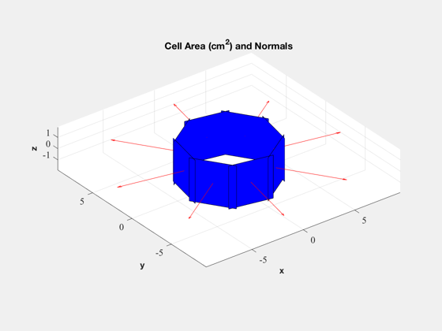
Initialize state for the simulation
% Initial State % The state vector is [position;velocity;quaternion;angular velocity; % battery state of charge]. We initialize in a circular orbit. %-------------------------------------------------------------------------- x0 = 6681; % 310 km earth orbit v0 = VOrbit(x0); % v for circular orbit r0 = [x0;0;0]; % position vector v0 = [0;v0;0]; % velocity vector % start from a nominally stable attitude profile - aligned with LVLH and % rotating at orbit rate to be gravity gradient stabilized q0 = QLVLH(r0,v0); % orientation (quaternion - body relative to ECI frame) w0 = [0;-OrbRate(x0);0]; % angular velocity b0 = 34632; % Battery SOC - Joules (2600 mAh, 3.7 V) x = [r0;v0;q0;w0;b0]; t = 0; % Initialize the plotting arrays to save computation time. % Preallocates memory for the plotting variables. %------------------------------------------------ xPlot = [x zeros(14,nSim)]; [xT, dist,power] = RHSCubeSat( x, 0, d ); dragPlot = [dist.fAerodyn zeros(3,nSim)]; tAeroPlot = [dist.tAerodyn zeros(3,nSim)]; tMagPlot = [dist.tMag zeros(3,nSim)]; tGGPlot = [dist.tGG zeros(3,nSim)]; powerPlot = [power zeros(1,nSim)]; bPlot = zeros(3,nSim);
Run the simulation
%-------------------- h = waitbar(0,'TubeSat Simulation'); upF = ceil(nSim/20); kW = 1; for k = 1:nSim % Magnetic field - the magnetometer output is proportional to this %----------------------------------------------------------------- bField = QForm( x(7:10), BDipole( x(1:3), d.jD0+t/86400 ) ); % Control system placeholder - apply constant dipole %--------------------------------------------------- d.dipole = [0.01;0;0]; % Amp-turns m^2 % A time step with 4th order Runge-Kutta %--------------------------------------- x = RK4( @RHSCubeSat, x, dT, t, d ); % Obtain effect of drag and control %---------------------------------- [xT, dist,power] = RHSCubeSat( x, t, d ); dragPlot(:,k+1) = dist.fAerodyn; tAeroPlot(:,k+1) = dist.tAerodyn; tMagPlot(:,k+1) = dist.tMag; tGGPlot(:,k+1) = dist.tGG; powerPlot(:,k+1) = power; bPlot(:,k) = bField; % Update plotting and time %------------------------- xPlot(:,k+1) = x; t = t + dT; if k/upF >= kW waitbar(k/nSim,h); kW = kW + 1; end end close(h);
Plotting
%---------- [t, tL] = TimeLabl( (0:nSim)*dT ); % Y-axis labels %-------------- yL = {'r_x (km)' 'r_y (km)' 'r_z (km)' 'v_x (km/s)' 'v_y (km/s)' 'v_z (km/s)'... 'q_s' 'q_x' 'q_y' 'q_z' '\omega_x (rad/s)' '\omega_y (rad/s)' '\omega_z (rad/s)' 'b (Wh)'}; PlotOrbit(xPlot( 1: 3,:)); rMag = Mag(xPlot( 1: 3,:)); Plot2D( t, rMag-rMag(1), tL, '\Delta h km', 'Change in Altitude' ); Plot2D( t, xPlot( 7:10,:), tL, {yL{ 7:10}}, 'TubeSat ECI To Body Quaternion' ); Plot2D( t, xPlot(11:13,:), tL, {yL{11:13}}, 'TubeSat Attitude Rate (rad/s)' ); Plot2D( t, [xPlot(14,:)/3600;powerPlot], tL, {yL{14},'Power (W)'}, 'TubeSat Power System' ); % The force is in the ECI frame and the torques are in the body frame. %--------------------------------------------------------------------- Plot2D( t, 1e6*dragPlot, tL, {'F_x (\mu N)', 'F_y (\mu N)', 'F_z (\mu N)'}, 'TubeSat Drag Force, ECI (\mu N)' ); Plot2D( t, 1e6*tAeroPlot, tL, {'T_x (\mu Nm)','T_y (\mu Nm)','T_z (\mu Nm)'},'TubeSat Aerodynamic Torques'); Plot2D( t, 1e6*tGGPlot, tL, {'T_x (\mu Nm)','T_y (\mu Nm)','T_z (\mu Nm)'},'TubeSat Gravity Gradient Torques') Plot2D( t, 1e6*tMagPlot, tL, {'T_x (\mu Nm)','T_y (\mu Nm)','T_z (\mu Nm)'},'TubeSat Magnetic Torques') Plot2D( t(2:end), bPlot, tL, {'B_x (T)','B_y (T)','B_z (T)'},'Magnetic Field - Body Frame') Figui; %--------------------------------------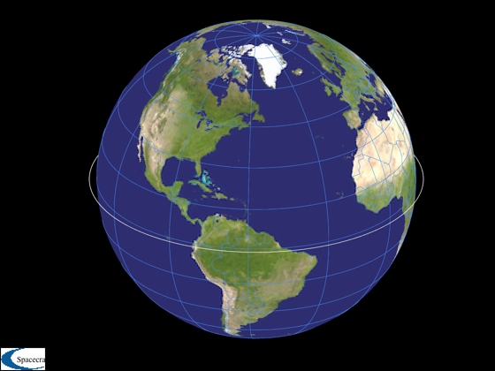 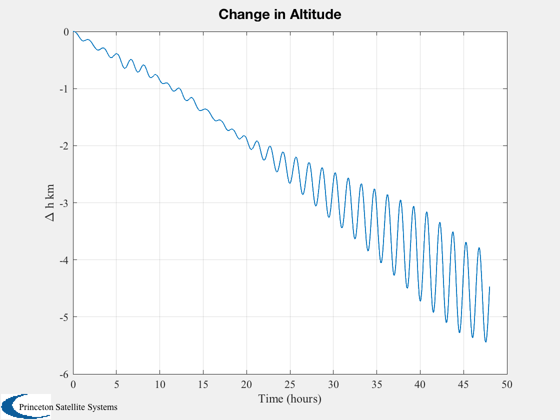
 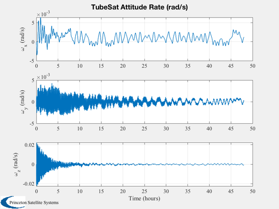 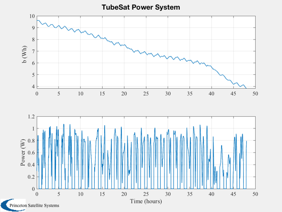 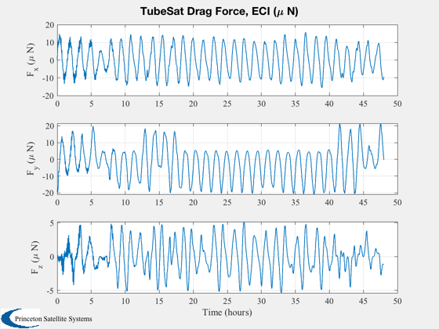 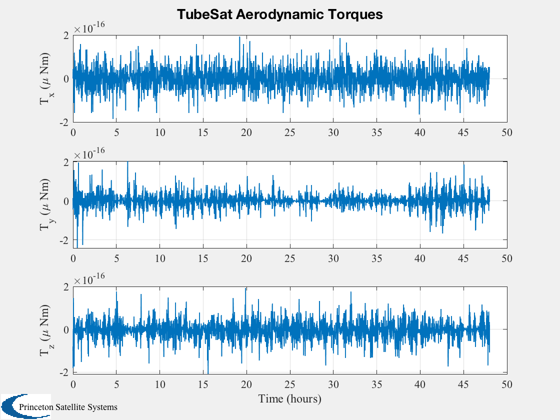 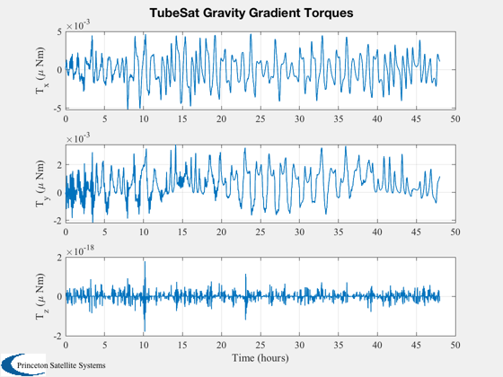 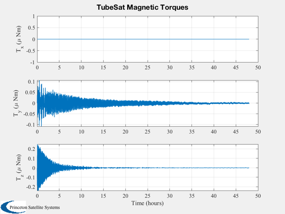 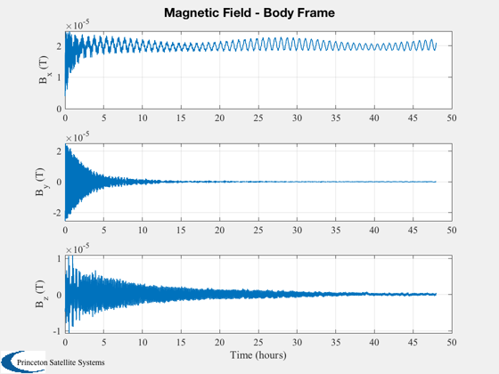
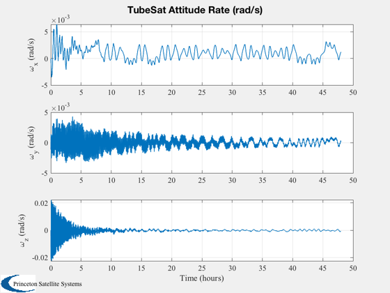 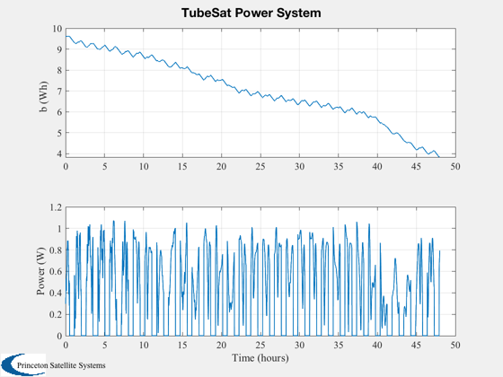 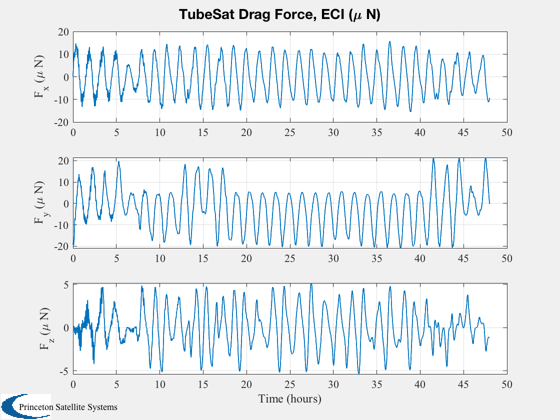 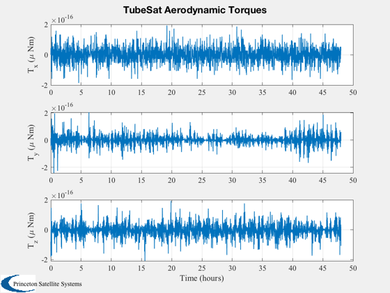 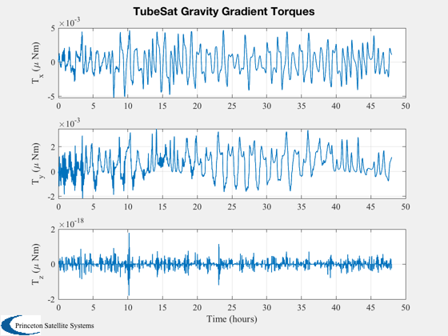 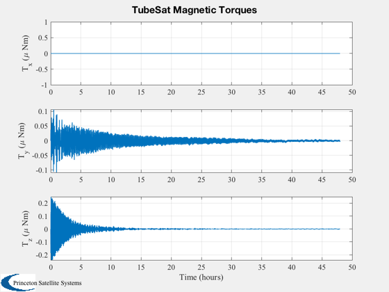 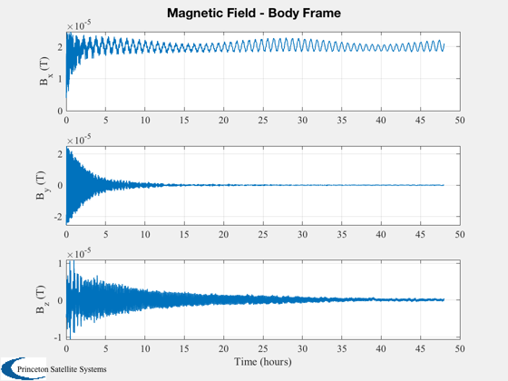